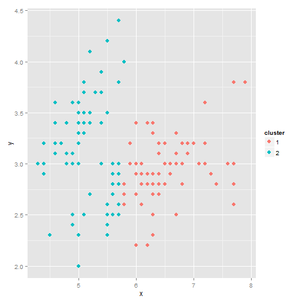
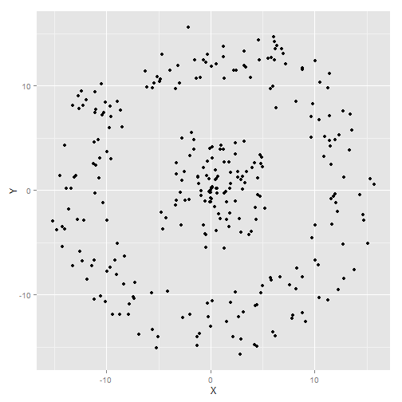
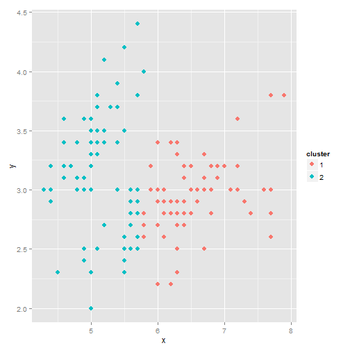
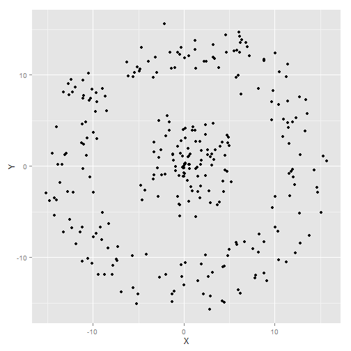
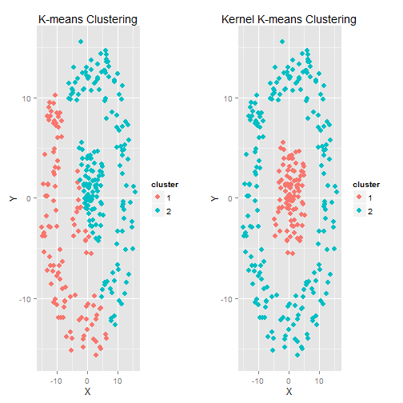

K-means is a cluster analysis model used to cluster linear points in a data set

But how effective is it at clustering when the data is non-linear?

Alex McBride
K-means is a cluster analysis model used to cluster linear points in a data set

But how effective is it at clustering when the data is non-linear?


Kernel k-means is an extension of the standard k-means algorithm that maps data points from input space to a higher dimensional feature space through a nonlinear transformation and minimizes the clustering error in feature space. But it does have its limitations....
My shiny application, which you can run at my Shiny App page, works by selecting the type of cluster modelling, (k-means or Kernel K-means) and number of clusters. From the inputs it produces a cluster plot showing the clustered dataset. It also runs a cross-validation test and gives results for Purity and NMI (Normalized Mutual Information).
In its current form, this application would be a useful teaching aid to show the difference between the two methods, and to highlight some of the drawbacks of each cluster model. e.g. What happens when \(\sigma\) (sigma) is set to high using the Kernel K-means algorithm?
The cross-validation test only gives a true result when the number of clusters is set to 2. For clusters larger than 2, the app generates a random test set based on the number of clusters selected and then produces results for NMI & Purity based on this random truth set. These results do not always reflect the exactness of the algorithms running.
This shiny app could become a very powerful tool, enabling quick cluster analysis on the fly.
It could be useful for presentations requiring various datasets, or to show different model results. As a tool for data analysis, it could be used to visualise (quickly) some cluster model theories over a dataset, perhaps saving the user time by helping to rule out or select a model to optimise for their dataset.
In the future, I would like to incorporate into the Shiny App
To view the source code for the app or to collaborate visit my Github Repo.